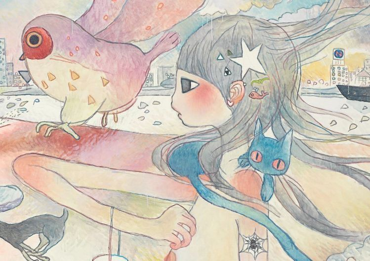

Aya Takano
painter manga artist sci-fi essayist
Who she is
Aya Takano is a Japanese painter, manga artist, and science fiction writer. She was born in Saitama, Japan in 1976. She is known for painting dreamy scenes with big-eyed girls and animals.
Read more
Born 1976
Grew up reading her father's science fiction books
Tama Art University
Graduated in 2000
Kaikai Kiki
Started as Takashi Murakami's assistant
Superflat
Part of the art movement